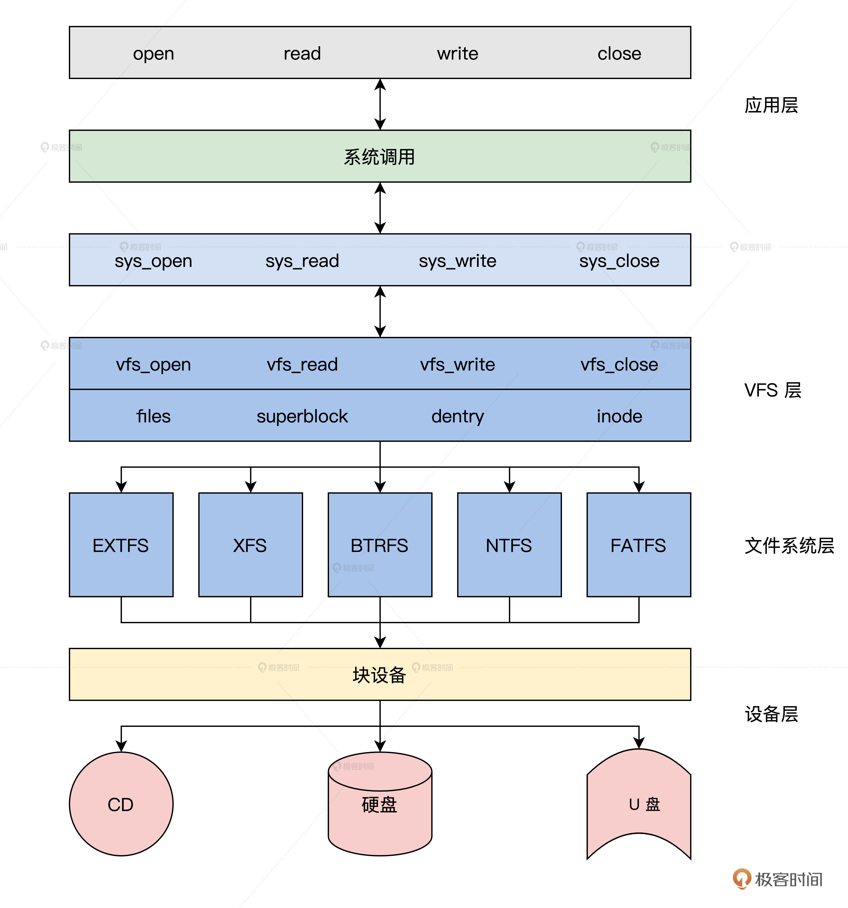
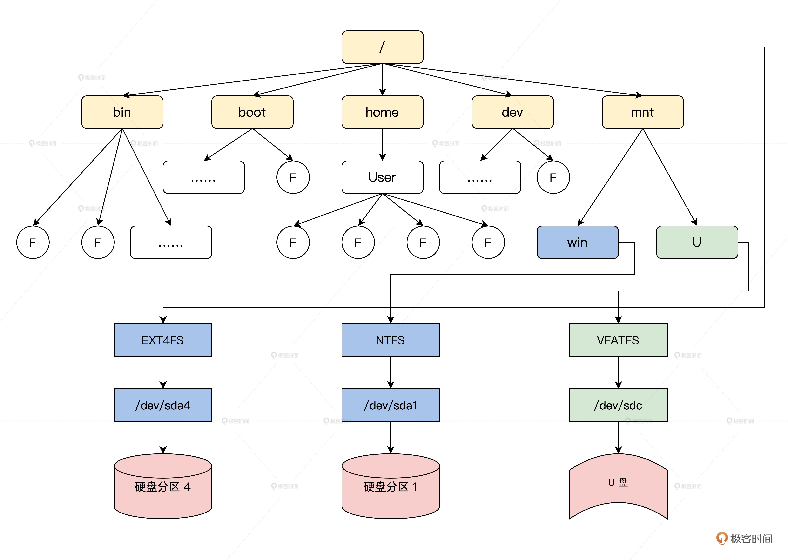
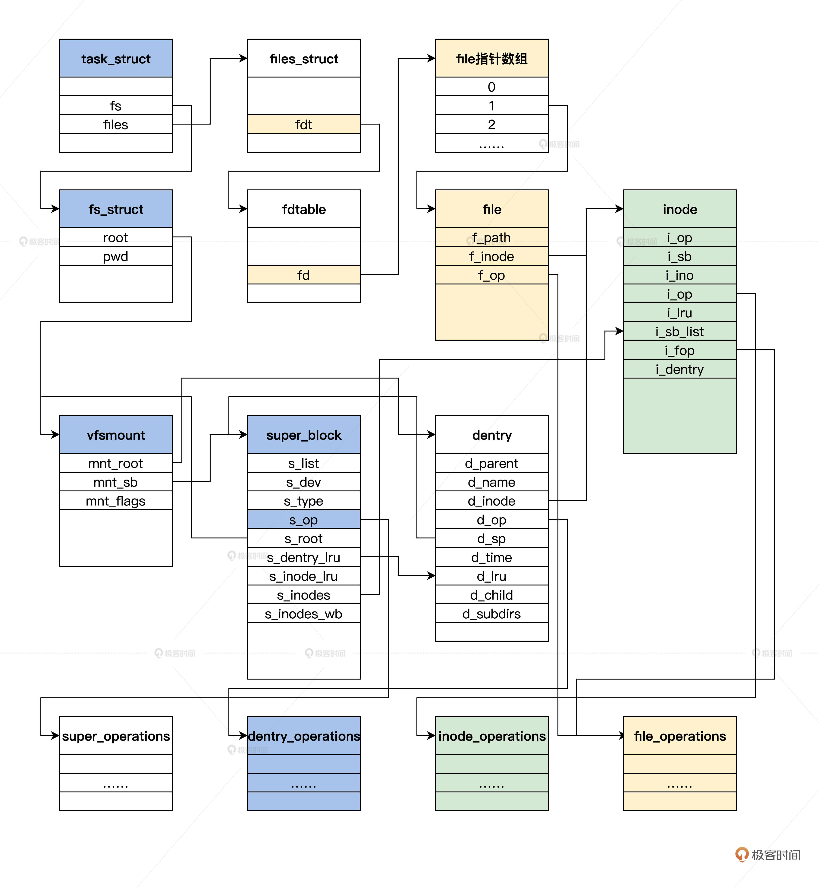
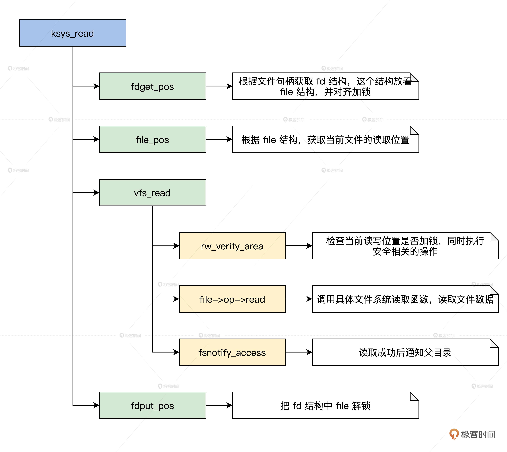
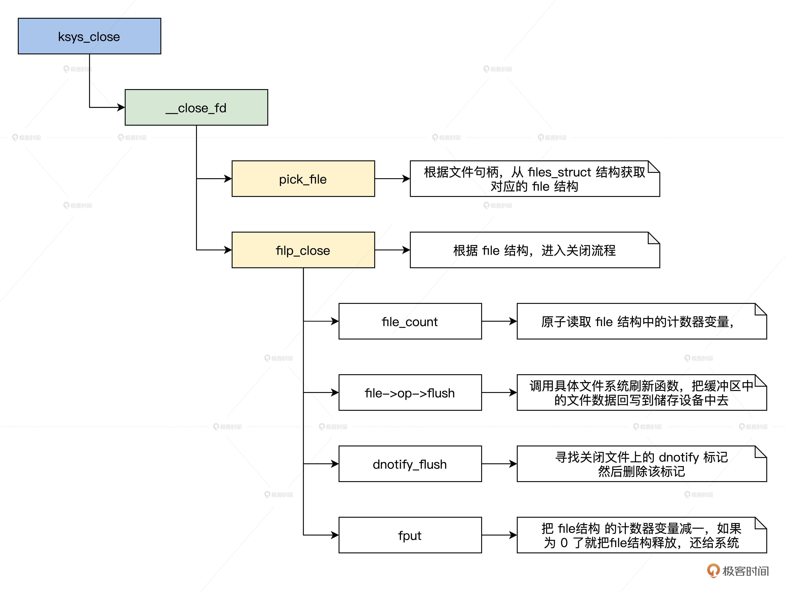

- 00 开篇词 为什么要学写一个操作系统？.md
- 00 编辑手记 升级认知，迭代自己的操作系统.md
- 01 程序的运行过程：从代码到机器运行.md
- 02 几行汇编几行C：实现一个最简单的内核.md
- 03 黑盒之中有什么：内核结构与设计.md
- 04 震撼的Linux全景图：业界成熟的内核架构长什么样？.md
- 05 CPU工作模式：执行程序的三种模式.md
- 06 虚幻与真实：程序中的地址如何转换？.md
- 07 Cache与内存：程序放在哪儿？.md
- 08 锁：并发操作中，解决数据同步的四种方法.md
- 09 瞧一瞧Linux：Linux的自旋锁和信号量如何实现？.md
- 10 设置工作模式与环境（上）：建立计算机.md
- 11 设置工作模式与环境（中）：建造二级引导器.md
- 12 设置工作模式与环境（下）：探查和收集信息.md
- 13 第一个C函数：如何实现板级初始化？.md
- 14 Linux初始化（上）：GRUB与vmlinuz的结构.md
- 15 Linux初始化（下）：从_start到第一个进程.md
- 16 划分土地（上）：如何划分与组织内存？.md
- 17 划分土地（中）：如何实现内存页面初始化？.md
- 18 划分土地（下）：如何实现内存页的分配与释放？.md
- 19 土地不能浪费：如何管理内存对象？.md
- 20 土地需求扩大与保障：如何表示虚拟内存？.md
- 21 土地需求扩大与保障：如何分配和释放虚拟内存？.md
- 22 瞧一瞧Linux：伙伴系统如何分配内存？.md
- 23 瞧一瞧Linux：SLAB如何分配内存？.md
- 24 活动的描述：到底什么是进程？.md
- 25 多个活动要安排（上）：多进程如何调度？.md
- 26 多个活动要安排（下）：如何实现进程的等待与唤醒机制？.md
- 27 瞧一瞧Linux：Linux如何实现进程与进程调度_.md
- 28 部门分类：如何表示设备类型与设备驱动？.md
- 29 部门建立：如何在内核中注册设备？.md
- 30 部门响应：设备如何处理内核I_O包？.md
- 31 瞧一瞧Linux：如何获取所有设备信息？.md
- 32 仓库结构：如何组织文件_.md
- 33 仓库划分：文件系统的格式化操作.md
- 34 仓库管理：如何实现文件的六大基本操作？.md
- 35 瞧一瞧Linux：虚拟文件系统如何管理文件？.md
- 36 从URL到网卡：如何全局观察网络数据流动？.md
- 37 从内核到应用：网络数据在内核中如何流转.md
- 38 从单排到团战：详解操作系统的宏观网络架构.md
- 39 瞧一瞧Linux：详解socket实现与网络编程接口.md
- 40 瞧一瞧Linux：详解socket的接口实现.md
- 41 服务接口：如何搭建沟通桥梁？.md
- 42 瞧一瞧Linux：如何实现系统API？.md
- 43 虚拟机内核：KVM是什么？.md
- 44 容器：如何理解容器的实现机制？.md
- 45 ARM新宠：苹果的M1芯片因何而快？.md
- 46 AArch64体系：ARM最新编程架构模型剖析.md
- LMOS来信：第二季课程带你“手撕”计算机基础.md
- 大咖助场 以无法为有法，以无限为有限.md
- 用户故事 yiyang：我的上机实验“爬坑指南”.md
- 用户故事 成为面向“知识库”的工程师.md
- 用户故事 技术人如何做选择，路才越走越宽？.md
- 用户故事 操作系统发烧友：看不懂？因为你没动手.md
- 用户故事 用好动态调试，助力课程学习.md
- 用户故事 艾同学：路虽远，行则将至.md
- 结束语 生活可以一地鸡毛，但操作系统却是心中的光.md
35 瞧一瞧Linux：虚拟文件系统如何管理文件？
你好，我是LMOS。
在前面的课程中，我们已经实现了Cosmos下的文件系统rfs，相信你已经感受到了一个文件系统是如何管理文件的。今天我们一起来瞧一瞧Linux是如何管理文件，也验证一下Linux那句口号：一切皆为文件。
为此，我们需要首先搞清楚什么是VFS，接着理清为了实现VFS所用到的数据结构，然后看看一个文件的打开、读写、关闭的过程，最后我们还要亲自动手实践，在VFS下实现一个“小”且“能跑”的文件系统。
下面让我们开始吧！这节课的配套代码，你可以从这里下载。
什么是VFS
VFS（Virtual Filesystem）就像伙伴系统、SLAB内存管理算法一样，也是SUN公司最早在Sloaris上实现的虚拟文件系统，也可以理解为通用文件系统抽象层。Linux又一次“白嫖”了Sun公司的技术。
在Linux中，支持EXT、XFS、JFS、BTRFS、FAT、NTFS等多达十几种不同的文件系统，但不管在什么储存设备上使用什么文件系统，也不管访问什么文件，都可以统一地使用一套open(), read()、write()、close()这样的接口。
这些接口看上去都很简单，但要基于不同的存储设备设计，还要适应不同的文件系统，这并不容易。这就得靠优秀的VFS了，它提供了一个抽象层，让不同的文件系统表现出一致的行为。
对于用户空间和内核空间的其他部分，这些文件系统看起来都是一样的：文件都有目录，都支持建立、打开，读写、关闭和删除操作，不用关注不同文件系统的细节。
我来给你画张图，你一看就明白了。-

你有没有发现，在计算机科学领域的很多问题，都可以通过增加一个中间的抽象层来解决，上图中Linux的VFS层就是应用和许多文件系统之间的抽象层。VFS向上对应用提供了操作文件的标准接口，向下规范了一个文件系统要接入VFS必需要实现的机制。
后面我们就会看到，VFS提供一系列数据结构和具体文件系统应该实现的回调函数。这样，一个文件系统就可以被安装到VFS中了。操作具体文件时，VFS会根据需要调用具体文件系统的函数。从此文件系统的细节就被VFS屏蔽了，应用程序只需要调用标准的接口就行了。
VFS数据结构
VFS为了屏蔽各个文件系统的差异，就必须要定义一组通用的数据结构，规范各个文件系统的实现，每种结构都对应一套回调函数集合，这是典型的面向对象的设计方法。
这些数据结构包含描述文件系统信息的超级块、表示文件名称的目录结构、描述文件自身信息的索引节点结构、表示打开一个文件的实例结构。下面我们依次探讨这些结构。
超级块结构
首先我们来看一看超级块结构，这个结构用于一个具体文件系统的相关信息，其中包含了VFS规定的标准信息，也有具体文件系统的特有信息，Linux系统中的超级块结构是一个文件系统安装在VFS中的标识。我们来看看代码，如下所示。
struct super_block {
struct list_head s_list; //超级块链表
dev_t s_dev; //设备标识
unsigned char s_blocksize_bits;//以位为单位的块大小
unsigned long s_blocksize;//以字节为单位的块大小
loff_t s_maxbytes; //一个文件最大多少字节
struct file_system_type *s_type; //文件系统类型
const struct super_operations *s_op;//超级块函数集合
const struct dquot_operations *dq_op;//磁盘限额函数集合
unsigned long s_flags;//挂载标志
unsigned long s_magic;//文件系统魔数
struct dentry *s_root;//挂载目录
struct rw_semaphore s_umount;//卸载信号量
int s_count;//引用计数
atomic_t s_active;//活动计数
struct block_device *s_bdev;//块设备
void *s_fs_info;//文件系统信息
time64_t s_time_min;//最小时间限制
time64_t s_time_max;//最大时间限制
char s_id[32]; //标识名称
uuid_t s_uuid; //文件系统的UUID
struct list_lru s_dentry_lru;//LRU方式挂载的目录
struct list_lru s_inode_lru;//LRU方式挂载的索引结点
struct mutex s_sync_lock;//同步锁
struct list_head s_inodes; //所有的索引节点
spinlock_t s_inode_wblist_lock;//回写索引节点的锁
struct list_head s_inodes_wb; //挂载所有要回写的索引节点
} __randomize_layout;
上述代码中我删除了我们现在不用关注的代码，在文件系统被挂载到VFS的某个目录下时，VFS会调用获取文件系统自己的超级块的函数，用具体文件系统的信息构造一个上述结构的实例，有了这个结构实例，VFS就能感知到一个文件系统插入了。
下面我们来看看超级块函数集合。
struct super_operations {
//分配一个新的索引结点结构
struct inode *(*alloc_inode)(struct super_block *sb);
//销毁给定的索引节点
void (*destroy_inode)(struct inode *);
//释放给定的索引节点
void (*free_inode)(struct inode *);
//VFS在索引节点为脏(改变)时，会调用此函数
void (*dirty_inode) (struct inode *, int flags);
//该函数用于将给定的索引节点写入磁盘
int (*write_inode) (struct inode *, struct writeback_control *wbc);
//在最后一个指向索引节点的引用被释放后，VFS会调用该函数
int (*drop_inode) (struct inode *);
void (*evict_inode) (struct inode *);
//减少超级块计数调用
void (*put_super) (struct super_block *);
//同步文件系统调用
int (*sync_fs)(struct super_block *sb, int wait);
//释放超级块调用
int (*freeze_super) (struct super_block *);
//释放文件系统调用
int (*freeze_fs) (struct super_block *);
int (*thaw_super) (struct super_block *);
int (*unfreeze_fs) (struct super_block *);
//VFS通过调用该函数，获取文件系统状态
int (*statfs) (struct dentry *, struct kstatfs *);
//当指定新的安装选项重新安装文件系统时，VFS会调用此函数
int (*remount_fs) (struct super_block *, int *, char *);
//VFS调用该函数中断安装操作。该函数被网络文件系统使用，如NFS
void (*umount_begin) (struct super_block *);
};
上述代码中super_operations结构中所有函数指针所指向的函数，都应该要由一个具体文件系统实现。
有了超级块和超级块函数集合结构，VFS就能让一个文件系统的信息和表示变得规范了。也就是说，文件系统只要实现了super_block和super_operations两个结构，就可以插入到VFS中了。但是，这样的文件系统没有任何实质性的功能，我们接着往下看。
目录结构
Linux系统中所有文件都是用目录组织的，就连具体的文件系统也是挂载到某个目录下的。Linux系统的目录结构逻辑示意图，如下所示。

上图中显示了Linux文件目录情况，也显示了一个设备上的文件系统是如何挂载到某个目录下的。那么VFS用什么来表示一个目录呢？我们来看看代码，如下所示。
//快速字符串保存关于字符串的 "元数据"（即长度和哈希值）
struct qstr {
union {
struct {
HASH_LEN_DECLARE;
};
u64 hash_len;
};
const unsigned char *name;//指向名称字符串
};
struct dentry {
unsigned int d_flags; //目录标志
seqcount_spinlock_t d_seq; //锁
struct hlist_bl_node d_hash;//目录的哈希链表
struct dentry *d_parent; //指向父目录
struct qstr d_name; //目录名称
struct inode *d_inode; //指向目录文件的索引节点
unsigned char d_iname[DNAME_INLINE_LEN]; //短目录名
struct lockref d_lockref; //目录锁与计数
const struct dentry_operations *d_op;//目录的函数集
struct super_block *d_sb; //指向超级块
unsigned long d_time; //时间
void *d_fsdata; //指向具体文件系统的数据
union {
struct list_head d_lru; //LRU链表
wait_queue_head_t *d_wait;
};
struct list_head d_child; //挂入父目录的链表节点
struct list_head d_subdirs; //挂载所有子目录的链表
} __randomize_layout;
我们可以发现，dentry结构中包含了目录的名字和挂载子目录的链表，同时也能指向父目录。但是需要注意的是，目录也是文件，需要用inode索引结构来管理目录文件数据。
这个目录文件数据，你可以把它想象成一个表，表有三列，它们分别是：名称、类型（文件或者目录）、inode号。扫描这个表，就可以找出这个目录文件中包含的所有子目录或者文件。
接着我们来看看目录函数集,如下所示。
struct dentry_operations {
//该函数判断目录对象是否有效
int (*d_revalidate)(struct dentry *, unsigned int);
int (*d_weak_revalidate)(struct dentry *, unsigned int);
//该函数为目录项生成散列值，当目录项要加入散列表中时，VFS调用该函数
int (*d_hash)(const struct dentry *, struct qstr *);
//VFS调用该函数来比较name1和name2两个文件名。多数文件系统使用VFS的默认操作，仅做字符串比较。对于有些文件系统，比如FAT，简单的字符串比较不能满足其需要，因为 FAT文件系统不区分大小写
int (*d_compare)(const struct dentry *,
unsigned int, const char *, const struct qstr *);
//当目录项对象的计数值等于0时，VFS调用该函数
int (*d_delete)(const struct dentry *);
//当分配目录时调用
int (*d_init)(struct dentry *);
//当目录项对象要被释放时，VFS调用该函数，默认情况下，它什么也不做
void (*d_release)(struct dentry *);
void (*d_prune)(struct dentry *);
//当一个目录项对象丢失了相关索引节点时，VFS调用该函数。默认情况下VFS会调用iput()函数释放索引节点
void (*d_iput)(struct dentry *, struct inode *);
//当需要生成一个dentry的路径名时被调用
char *(*d_dname)(struct dentry *, char *, int);
//当要遍历一个自动挂载时被调用（可选），这应该创建一个新的VFS挂载记录并将该记录返回给调用者
struct vfsmount *(*d_automount)(struct path *);
//文件系统管理从dentry的过渡（可选）时，被调用
int (*d_manage)(const struct path *, bool);
//叠加/联合类型的文件系统实现此方法
struct dentry *(*d_real)(struct dentry *, const struct inode *);
} ____cacheline_aligned;
dentry_operations结构中的函数，也需要具体文件系统实现，下层代码查找或者操作目录时VFS就会调用这些函数，让具体文件系统根据自己储存设备上的目录信息处理并设置dentry结构中的信息，这样文件系统中的目录就和VFS的目录对应了。
现在我们已经解决了目录，下面我们就去看看VFS怎么实现表示文件。
文件索引结点
VFS用inode结构表示一个文件索引结点，它里面包含文件权限、文件所属用户、文件访问和修改时间、文件数据块号等一个文件的全部信息，一个inode结构就对应一个文件，代码如下所示。
struct inode {
umode_t i_mode;//文件访问权限
unsigned short i_opflags;//打开文件时的标志
kuid_t i_uid;//文件所属的用户id
kgid_t i_gid;//文件所属的用户组id
unsigned int i_flags;//标志
const struct inode_operations *i_op;//inode函数集
struct super_block *i_sb;//指向所属超级块
struct address_space *i_mapping;//文件数据在内存中的页缓存
unsigned long i_ino;//inode号
dev_t i_rdev;//实际设备标志符
loff_t i_size;//文件大小，以字节为单位
struct timespec64 i_atime;//文件访问时间
struct timespec64 i_mtime;//文件修改时间
struct timespec64 i_ctime;//最后修改时间
spinlock_t i_lock; //保护inode的自旋锁
unsigned short i_bytes;//使用的字节数
u8 i_blkbits;//以位为单位的块大小；
u8 i_write_hint;
blkcnt_t i_blocks;
struct list_head i_io_list;
struct list_head i_lru; //在缓存LRU中的链表节点
struct list_head i_sb_list;//在超级块中的链表节点
struct list_head i_wb_list;
atomic64_t i_version;//版本号
atomic64_t i_sequence;
atomic_t i_count;//计数
atomic_t i_dio_count;//直接io进程计数
atomic_t i_writecount;//写进程计数
union {
const struct file_operations *i_fop;//文件函数集合
void (*free_inode)(struct inode *);
};
struct file_lock_context *i_flctx;
struct address_space i_data;
void *i_private; //私有数据指针
} __randomize_layout;
inode结构表示一个文件的全部信息，但这个inode结构是VFS使用的，跟某个具体文件系统上的“inode”结构并不是一一对应关系。
所以，inode结构还有一套函数集合，用于具体文件系统根据自己特有的信息，构造出VFS使用的inode结构，这套函数集合如下所示。
struct inode_operations {
//VFS通过系统create()和open()接口来调用该函数，从而为dentry对象创建一个新的索引节点
int (*create) (struct inode *, struct dentry *,int);
//该函数在特定目录中寻找索引节点，该索引节点要对应于dentry中给出的文件名
struct dentry * (*lookup) (struct inode *, struct dentry *);
//被系统link()接口调用，用来创建硬连接。硬链接名称由dentry参数指定
int (*link) (struct dentry *, struct inode *, struct dentry *);
//被系统unlink()接口调用，删除由目录项dentry链接的索引节点对象
int (*unlink) (struct inode *, struct dentry *);
//被系统symlik()接口调用，创建符号连接，该符号连接名称由symname指定，连接对象是dir目录中的dentry目录项
int (*symlink) (struct inode *, struct dentry *, const char *);
//被mkdir()接口调用，创建一个新目录。
int (*mkdir) (struct inode *, struct dentry *, int);
//被rmdir()接口调用，删除dentry目录项代表的文件
int (*rmdir) (struct inode *, struct dentry *);
//被mknod()接口调用，创建特殊文件(设备文件、命名管道或套接字)。
int (*mknod) (struct inode *, struct dentry *, int, dev_t);
//VFS调用该函数来移动文件。文件源路径在old_dir目录中，源文件由old_dentry目录项所指定，目标路径在new_dir目录中，目标文件由new_dentry指定
int (*rename) (struct inode *, struct dentry *, struct inode *, struct dentry *);
//被系统readlink()接口调用，拷贝数据到特定的缓冲buffer中。拷贝的数据来自dentry指定的符号链接
int (*readlink) (struct dentry *, char *, int);
//被VFS调用，从一个符号连接查找他指向的索引节点
int (*follow_link) (struct dentry *, struct nameidata *);
//在follow_link()调用之后，该函数由vfs调用进行清除工作
int (*put_link) (struct dentry *, struct nameidata *);
//被VFS调用，修改文件的大小，在调用之前，索引节点的i_size项必须被设置成预期的大小
void (*truncate) (struct inode *);
//该函数用来检查给定的inode所代表的文件是否允许特定的访问模式，如果允许特定的访问模式，返回0，否则返回负值的错误码
int (*permission) (struct inode *, int);
//被notify_change接口调用，在修改索引节点之后，通知发生了改变事件
int (*setattr) (struct dentry *, struct iattr *);
//在通知索引节点需要从磁盘中更新时，VFS会调用该函数
int (*getattr) (struct vfsmount *, struct dentry *, struct kstat *);
//被VFS调用，向dentry指定的文件设置扩展属性
int (*setxattr) (struct dentry *, const char *, const void *, size_t, int);
//被VFS调用，拷贝给定文件的扩展属性name对应的数值
ssize_t (*getxattr) (struct dentry *, const char *, void *, size_t);
//该函数将特定文件所有属性列表拷贝到一个缓冲列表中
ssize_t (*listxattr) (struct dentry *, char *, size_t);
//该函数从给定文件中删除指定的属性
int (*removexattr) (struct dentry *, const char *);
};
上述代码中删除了一些我们不用关心的接口，VFS通过定义inode结构和函数集合，并让具体文件系统实现这些函数，使得VFS及其上层只要关注inode结构，底层的具体文件系统根据自己的文件信息生成相应的inode结构，达到了VFS表示一个文件的目的。
下面我们再看一个实例，进一步理解VFS如何表示一个打开的文件。
打开的文件
如何表示应用进程打开的不同文件呢？ VFS设计了一个文件对象结构解决这个问题，文件对象结构表示进程已打开的文件。
如果我们站在应用程序的角度思考，文件对象结构会首先进入我们的视野。应用程序直接处理的就是文件，而不是超级块、索引节点或目录项。文件对象结构包含了我们非常熟悉的信息，如访问模式、当前读写偏移等。我们来看代码，如下所示。
struct file {
union {
struct llist_node fu_llist;
struct rcu_head fu_rcuhead;
} f_u;
struct path f_path; //文件路径
struct inode *f_inode; //文件对应的inode
const struct file_operations *f_op;//文件函数集合
spinlock_t f_lock; //自旋锁
enum rw_hint f_write_hint;
atomic_long_t f_count;//文件对象计数据。
unsigned int f_flags;//文件标志
fmode_t f_mode;//文件权限
struct mutex f_pos_lock;//文件读写位置锁
loff_t f_pos;//进程读写文件的当前位置
u64 f_version;//文件版本
void *private_data;//私有数据
} __randomize_layout
在进程结构中有个文件表，那个表其实就是file结构的指针数组，进程每打开一个文件就会建立一个file结构实例，并将其地址放入数组中，最后返回对应的数组下标，就是我们调用open函数返回的那个整数。
对于file结构，也有对应的函数集合file_operations结构，下面我们再次看看它，如下所示。
struct file_operations {
struct module *owner;//所在的模块
loff_t (*llseek) (struct file *, loff_t, int);//调整读写偏移
ssize_t (*read) (struct file *, char __user *, size_t, loff_t *);//读
ssize_t (*write) (struct file *, const char __user *, size_t, loff_t *);//写
int (*mmap) (struct file *, struct vm_area_struct *);//映射
int (*open) (struct inode *, struct file *);//打开
int (*flush) (struct file *, fl_owner_t id);//刷新
int (*release) (struct inode *, struct file *);//关闭
} __randomize_layout;
file_operations结构中的函数指针有31个，这里我删除了我们不需要关注的函数指针，这些函数依然需要具体文件系统来实现，由VFS层来调用。
到此为止，有超级块、目录结构、文件索引节点，打开文件的实例，通过四大对象就可以描述抽象出一个文件系统了。而四大对象的对应的操作函数集合，又由具体的文件系统来实现，这两个一结合，一个文件系统的状态和行为都具备了。
这样一个具体的文件系统，我们就可以安装在VFS中运行了。
四大对象结构的关系
我们已经了解构成文件系统的四大对象结构，但是要想完全了解它们的工作机制，还必须要搞清楚，随着VFS代码的运行，这些对象结构在内存中的建立和销毁以及它们之间的组织关系。
一图胜千言，我来为你画一幅全景图，你就明白四大对象结构之间的关系了。-

上图中展示了spuer_block、dentry、inode、file四大结构的关系，当然这只是打开一个文件的情况，如果打开了多个文件则相应的结构实例就会增加，不过底层逻辑还是前面图里梳理的这样，万变不离其宗。
搞清楚了四大结构的关系后，我们就可以探索文件相关的操作了。
文件操作
Linux下常规的文件操作就是打开、读、写、关闭，让我们分别讨论一下这几种文件操作的流程。
打开文件
在对文件进行读写之前，需要先用open函数打开这个文件。应用程序使用标准库的open函数来打开一个文件。
在x86_64架构里，open函数会执行syscall指令，从用户态转换到内核态，并且最终调用到do_sys_open函数，然进而调用do_sys_openat2函数。
我给你画一幅流程图，你一看就明白了。

上图中清楚了展示了从系统调用开始，打开文件的全部主要流程，file、dentry、inode三个结构在这个流程中扮演了重要角色。在查找路径和检查权限后，进入了具体文件系统的打开流程。
读写文件
只要打开了一个文件，就可以对文件进行进一步的读写操作了。其实读写本是两个操作，只数据流向不同：读操作是数据从文件经由内核流向进程，而写操作是数据从进程经由内核流向文件。
所以，下面我们以读操作为例，看看读操作的流程，我依然用画图的方式为你展示这一流程，如下所示。

上图中展示了读文件操作的函数调用流程，写文件操作的流程和读文件操作的流程一样，只是数据流向不同，我就不展开了，你可以自己想一下。
关闭文件
我们打开了文件，也对文件进行了读写，然后就到了关闭文件的环节。为什么要关闭文件呢？因为打开文件时分配了很多资源，如file、dentry、inode，内存缓冲区等，这些资源使用了都要还给系统，如若不然，就会导致资源泄漏。
下面我们就来看看关闭文件的操作流程，我同样用画图的方式为你展示这一流程，如下所示。

以上就是关闭一个文件的全部流程。它回收了file结构，其中最重要是调用了文件系统的flush函数，它给了文件系统一个刷新缓冲区，把数据写回储存设备的机会，这样就保证了储存设备数据的一致性。
文件系统实例
为了进一步加深理解，我为你写了一个400行代码左右的最小文件系统，放在本课的目录中，它就是trfs，这是一个内存文件系统，支持文件的建立、打开、读写、关闭等操作，通过内存块存放数据。下面仅对文件系统的注册和使用进行介绍。
注册trfs
我们先来看看如何注册trfs文件系统的。由于我们的文件系统是写在Linux内核模块中的，所以我们要在模块初始化函数中注册文件系统 ，Linux注册文件系统需要一个参数，即文件系统类型结构，它里面放着文件系统名字、文件系统挂载、卸载的回调函数，代码如下所示。
struct file_system_type trfs_fs_type = {
.owner = THIS_MODULE,
.name = "trfs",//文件系统名字
.mount = trfs_mount,//文件系统挂载函数
.kill_sb = trfs_kill_superblock,//文件系统卸载函数
};
static int trfs_init(void)
{
int ret;
init_fileinfo();//初始化trfs文件系统数据结构
ret = register_filesystem(&trfs_fs_type);//注册文件系统
if (ret)
printk(KERN_EMERG"register trfs failed\n");
printk(KERN_EMERG"trfs is ok\n");
return ret;
}
static void trfs_exit(void)
{
exit_fileinfo();//释放trfs文件系统数据结构
unregister_filesystem(&trfs_fs_type);//卸载文件系统
}
module_init(trfs_init);
module_exit(trfs_exit);
上面的代码只展示了注册文件系统的代码，其它代码在课程相关代码目录下。支持文件打开、读写、关闭操作，能够在内存中保存文件数据。
使用trfs文件系统
注册了trfs文件系统，这不等于可以使用这个文件系统存取文件了。那么如何使用trfs文件系统呢？当然首先是编译trfs内核模块代码，在终端中cd到对应的目录下执行make，然后把编译好的内核模块插入到系统中，最后就是将这个文件系统挂载到一个具体的目录下。代码如下。
make //编译内核模块
sudo insmod trfs.ko //把内核模块插入到内核
sudo mount -t trfs none /mnt/ // 挂载trfs文件系统到mnt目录下
有了上述代码，挂载trfs到/mnt下，我们就可以用touch建立一个文件，然后用cat读取这个文件了。
好了，关于trfs我们就介绍到这里了，trfs的代码我已经帮你写好了，你可以自己慢慢研究，有什么问题也可以和我交流。
重点回顾
至此，Linux的虚拟文件系统就告一段落了，同时也标志着我们整个文件系统章节结束了。那么本节课中学了什么呢？我来为你梳理一下。
1.什么是VFS。VFS是虚拟文件系统，是Linux中一个中间层，它抽象了文件系统共有数据结构和操作函数集合。一个具体的文件系统只要实现这些函数集合就可以插入VFS中了，也因为VFS的存在，使得Linux可以同时支持各种不同的文件系统。
2.VFS的数据结构，为了搞清楚VFS的实现原理，我们研究了它的数据结构，分别是表示文件系统的超级块结构、表示文件路径的目录结构、表示文件自身的索引结点结构，还有进程打开的文件实例结构，最后还了解了它们之间的关系。
3.为了进一步了解VFS和具体文件系统的工作机制，我们研究了文件的打开、读写、关闭等操作流程，在这些流程我们明白了VFS是如何和具体文件系统打通的。
4.为了弄懂一个具体文件系统是如何安装到VFS中的，我们实现了一个小的trfs文件系统，trfs将文件数据保存在内存中， 将trfs挂载到Linux中某个目录下就可以让一些标准应用进行文件操作了。
你或许还想知道EXT4文件系统是如何划分储存设备的，还想知道EXT4是如何管理目录和文件索引结点的。那请你以勤奋为舟，遨游在LInux代码的海洋中，寻找EXT4这座大岛吧。
思考题
请说一说 super_block，dentry，inode这三个数据结构 ，一定要在储存设备上对应存在吗？
欢迎你在留言区跟我交流互动，也推荐你把这节课分享给朋友一起学习进步。
我是LMOS，我们下节课见！
© 2019 - 2023 Liangliang Lee. Powered by gin and hexo-theme-book.